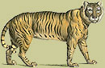
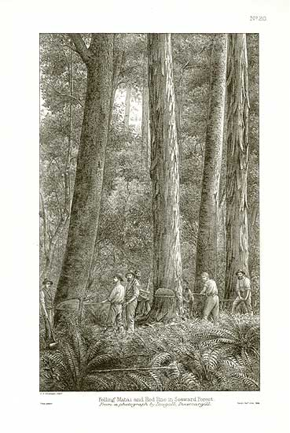

|  |
Fine Rare Prints |
|||
Botanical |
||||
Animals |
Birds |
Botanicals |
CDs |
Classical |
Marine |
Miscellaneous |
Military |
People |
Topography |
Home |
About us |
Contact us |
Order |
Useful info |
Kirk's Forest Flora of New ZealandA large antique lithograph from 1889(These are some of the oldest illustrations of trees from New Zealand's amazingly diverse forests. They look stunning mounted in a simple wooden frame) Felling Matai and Red Pine In Seaward Forest in 1886$95 - order #347 |

| Information |
This is an original antique print of New Zealand forest flora, published by the botanist Thomas Kirk in 1889. Many of his prints were the first illustrations ever published of certain trees. New Zealand is renowned for its amazingly diverse and beautiful forest fauna. For example, the hill ranges to the west of the city of Auckland contain more tree species than in the whole of Northern Europe. Thomas Kirk was born in Warwick, England, educated in Coventry, and was employed for some years at Newark's timber mills. In 1863 he emigrated to New Zealand where he devoted himself to botany. He became curator of the museum and was elected a fellow of the Linnaean Society in 1871. In 1885 Kirk became chief conservator of state forests and in 1889 his Forest Flora of New Zealand was published by the Government. It was said of Kirk that no other botanist has ever acquired such a complete familiarity with the flora of New Zealand. |
Date |
This is an original antique print from 1889. |
| Print method |
Stone lithograph printed on smooth, fine quality paper.
Print on one side, blank on the reverse. |
Condition |
Excellent condition - as fresh as the day it was published |
| Size |
Approx 16 by 10 inches (41 cm by 25 cm) |
| How to order |
Please note the order number for this print which is shown at the top
of the page. Then click on the Order button at the top or the Order link
at the bottom of this page. |
Home |
Contact us |
Order |
| © 30/11/02 Peter McConnell, all rights reserved | ||